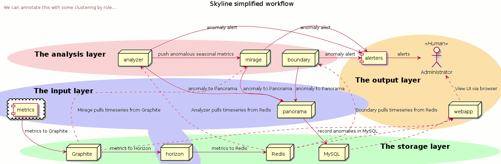

A brief history
Skyline was originally open sourced by Etsy as a real-time anomaly detection system. It was originally built to enable passive monitoring of hundreds of thousands of metrics, without the need to configure a model/thresholds for each one, as you might do with Nagios. It was designed to be used wherever there are a large quantity of high-resolution time series which need constant monitoring. Once a metric stream was set up from Graphite, additional metrics are automatically added to Skyline for analysis, anomaly detection, alerting and briefly published in the Webapp frontend. github/etsy stopped actively maintaining Skyline in 2014.
Skyline - as a work in progress
Etsy found the “one size fits all approach” to anomaly detection wasn’t actually proving all that useful to them.
There is some truth in that in terms of the one size fits all methodology that Skyline was framed around. With hundreds of thousands of metrics this does make Skyline fairly hard to tame, in terms of how useful it is and tuning the noise is difficult. Tuning the noise to make it constantly useful and not just noisy, removes the “without the need to configure a model/thresholds” element somewhat.
It has been generally accepted now that a basic 3-sigma anomaly detection implementation is not generally useful in the operations and machine metrics space.
- David Gildeh:
“I still remember taking Skyline and applying it to one of our customer’s metrics, and turning 100,000 metrics into 10,000 anomalies. It just created more noise from the noise.” https://blog.outlyer.com/what-good-is-anomaly-detection
This is still true of Skyline today, it will still detect the 10000 anomalies and it should. Detecting anomalies and alerting are two entirely different things.
So why continue developing Skyline?
To try and make it better and more useful. 3-sigma anomaly detection works, but it works too well. Therefore there is an opportunity to see if it is possible to augment 3-sigma methods with additional analyses with new and different techniques, including the use of historic data in real time, to be more useful and provide additional insight into related time series data. One of the key paradigm shifts that is perhaps needed is to change the mindset that anomaly detection and alerting are synonymous with each other or related in any way, which seems to be general public opinion. Skyline does anomaly detection, anomaly deflection, training and learning, and alerting is simply a byproduct of this analysis pipeline, if you want to enable it.
The first way to make Skyline MUCH better than the manner it was implemented and framed by Etsy, is to NOT try and use it to alert on 1000s of metrics in the first place. Using Skyline as a scapel for alerting and a sword for anomaly detecting, rather than using it as a sword for anomaly detecting AND alerting.
Within in this paradigm, Skyline is still essentially 3-sigma based, however now being augmented with additional analysis and methods, Skyline has been much improved in many ways and is very useful at doing anomaly detection, recording anomalies, correlating and alerting and training on your KEY metrics. The ongoing development of Skyline has been focused on improving Skyline in the following ways:
Improving the anomaly detection methodologies used in the 3-sigma context.
Extending Skyline’s 3-sigma methodology to enable the operator and Skyline to handle seasonality in metrics.
The addition of an anomalies database for learning and root cause analysis.
Adding the ability for the operator to teach Skyline and have Skyline learn things that are NOT anomalous using a time series similarities comparison method based on features extraction and comparison using the tsfresh package. With Ionosphere we are training Skyline on what is NOT anomalous, rather than focusing on what is anomalous. Ionosphere allows us to train Skyline as to what is normal, even if normal includes spikes and dips and seasonality. After all we have some expectation that most of our metrics would be NOT anomalous most of the time, rather than anomalous most of the time. So training Skyline what is NOT ANOMALOUS is more efficient than trying to label anomalies.
Adding the ability to Skyline to determine what other metrics are related to an anomaly event using cross correlation analysis of all the metrics using Linkedin’s luminol library when an anomaly event is triggered and recording these in the database to assist in root cause analysis.
And…
The architecture/pipeline works very well at doing what it does. It is solid and battle tested.
Skyline is FAST!!! Faster enough to handle 10s of 1000s of time series in near real time. In the world of Python, data analysis, R and most machine learning, Skyline is FAST. Processing and analysing 1000s and 1000s of constantly changing time series, every minute of every day and it can do it in multiple resolutions, on a fairly low end commodity server.
Is Skyline better than other things at anomaly detection? Unknown. The development of Skyline is not focused on making it be better than other things or the best, it is focused on trying to make Skyline better than it was and currently is. Unfortunately Skyline no longer fits the NAB benchmark method as it’s methods operate exclusively in the real time arena on real time data, historic data and trained patterns and this could not be bolted into a NAB test and would violate the NAB benchmark requirements.
The new look of Skyline apps
Horizon - feed metrics to Redis via a pickle input from Graphite/s
Analyzer - analyses metrics with 3-sigma algorithms
Mirage - analyses specific metrics at a custom time range with 3-sigma algorithms
Boundary - analyses specific time series for specific conditions
Crucible - store anomalous time series resources and adhoc analysis of any time series
Panorama - anomalies database, historical views and root cause analysis
Webapp - frontend to view current and historical anomalies, training data, features profiles, layers, matches and can browse Redis with rebrow and you manage Skyline’s learning with it
Ionosphere - time series fingerprinting and learning
Luminosity - Cross correlation of metrics for root cause analysis
Skyline is still a near real time anomaly detection system, however it has various modes of operation that are modular and self contained, so that only the desired apps need to be enabled, although the stack is now much more useful with them all running. This modular nature also isolated the apps from one another in terms of operation, meaning an error or failure in one does not necessarily affect others.
Skyline can now be feed/query and analyse time series on an ad hoc basis, on the fly. This means Skyline can now be used to analyse and process static data too, it is no longer just a machine/app metric fed system, if anyone wanted to use it to analyse historic data.
A simplified workflow of Skyline
This is a bit out of date.

Fullsize image for a clearer picture.
{kind=link}
What’s new
See whats-new for a comprehensive overview and description of the latest version/s of Skyline.
What’s old
It must be stated the original core of Skyline has not been altered in any way,
other than some fairly minimal Pythonic performance improvements, a bit of
optimization in terms of the logic used to reach settings.CONSENSUS and a
package restructure. In terms of the original Skyline Analyzer, it does the
same things just a little differently, hopefully better and a bit more.
There is little point in trying to improve something as simple and elegant in methodology and design as Skyline, which has worked so outstandingly well to date. This is a testament to a number of things, in fact the sum of all it’s parts, Etsy, Abe and co. did a great job in the conceptual design, methodology and actual implementation of Skyline and they did it with very good building blocks from the scientific community.
The architecture in a nutshell
Skyline uses to following technologies and libraries at its core:
Python - the main skyline application language - Python
Redis - Redis an in-memory data structure store
numpy - NumPy is the fundamental package for scientific computing with Python
scipy - SciPy Library - Fundamental library for scientific computing
pandas - pandas - Python Data Analysis Library
rebrow - Skyline uses a modified port of Marian Steinbach’s excellent rebrow
tsfresh - tsfresh - Automatic extraction of relevant features from time series
memcached - memcached - memory object caching system
pymemcache - pymemcache - A comprehensive, fast, pure-Python memcached client
luminol - luminol - Anomaly Detection and Correlation library
falcon - falcon - bare-metal web API framework for Python
adtk - adtk - Anomaly detection toolkit
matrixprofile - matrixprofile - time series data mining tasks, utilizing matrix profile algorithms
mass-ts - mass_ts - MASS (Mueen’s Algorithm for Similarity Search) - library for searching time series sub-sequences under z-normalized Euclidean distance for similarity.